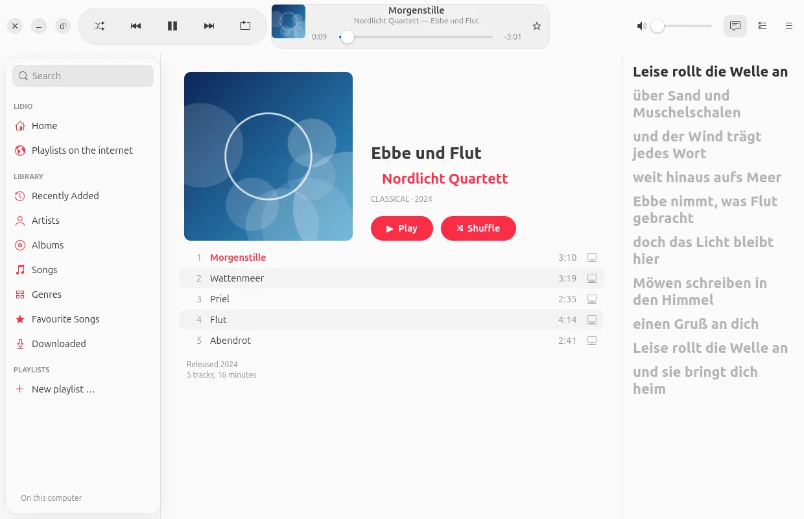
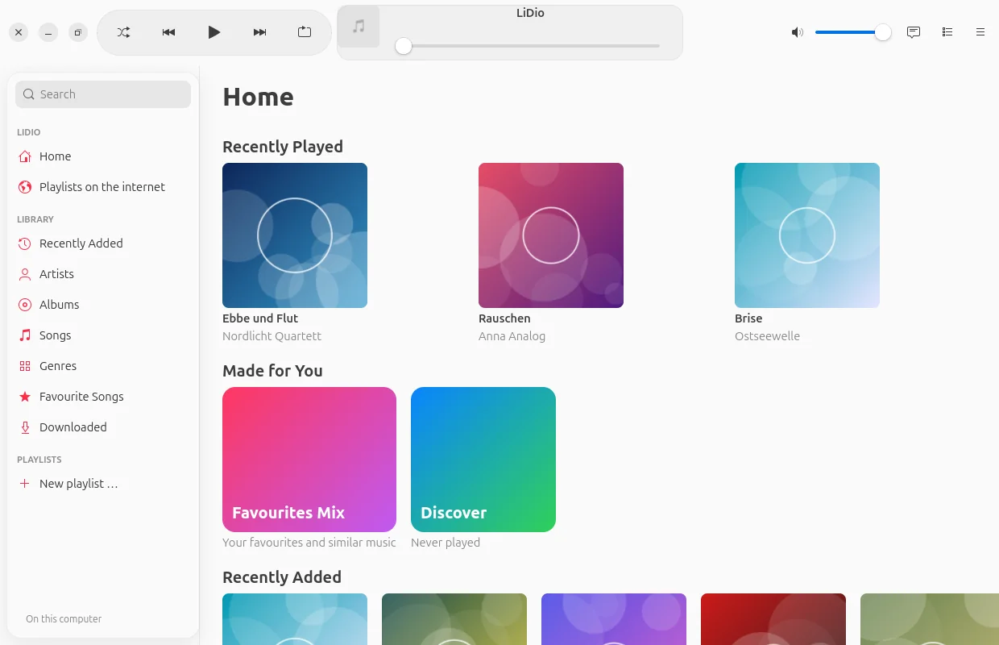
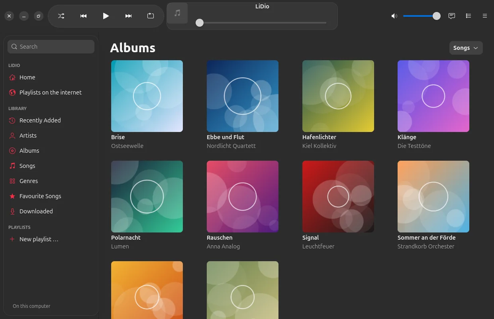
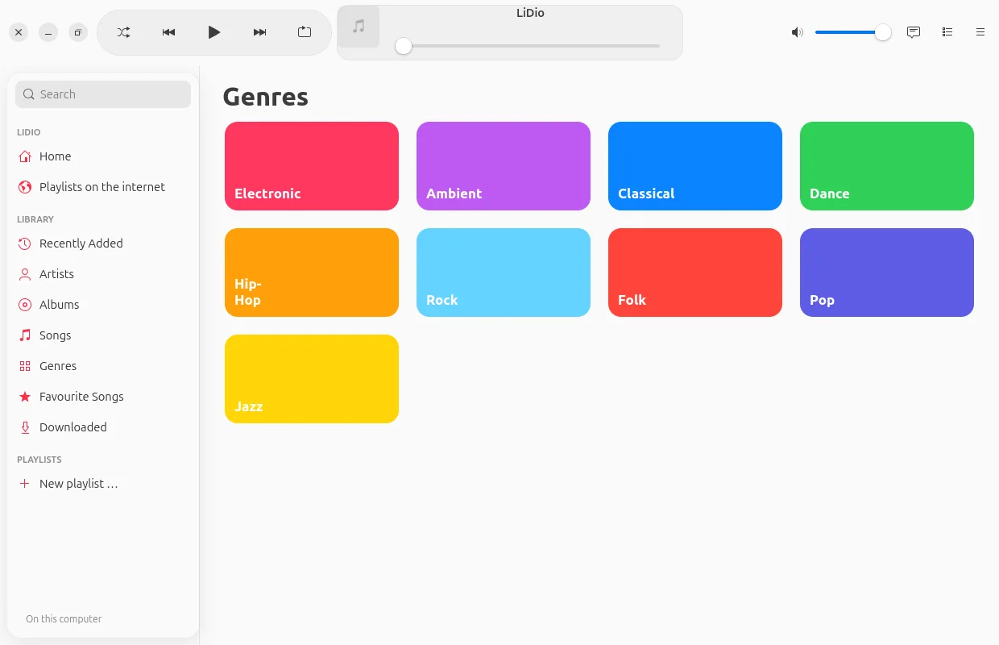
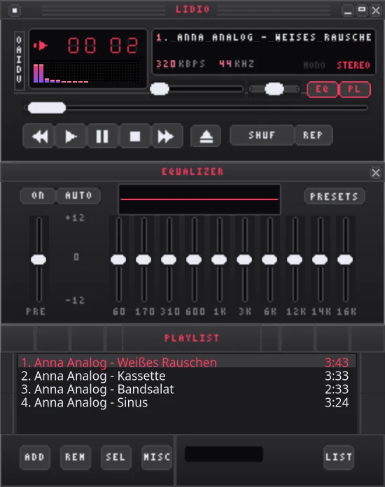

Your music.
Your server.
LiDio plays the music that belongs to you – from your Emby, Jellyfin or Navidrome at home
or from folders on the device. Used like the Music app on iPhone and Mac. No subscription.

Built like the Music app.
For your own collection.
Years spent collecting records, CDs and files – and then you are supposed to listen to them only in a subscription app? LiDio brings your collection to phone and computer the way you know it from Apple: large covers, clear lists, “Now Playing” with lyrics. Designed following Apple’s Human Interface Guidelines, in the modern glass look or classic.
Library
Everything in its place.
Home with mixes for you, albums, artists, songs, genres, favourite songs and playlists – fast, even with tens of thousands of songs.


Now Playing
Big. Calm.
With lyrics.
The cover fills the space, its colours lie softly behind it, the lyrics scroll along – and a click on a line jumps there. Lyrics come from your server or, if you like, from lrclib.net.

Playlists
Your lists
move with you.
Simply bring along playlists from other apps, from Deezer or Spotify: LiDio matches every song with your server – even if it is called “(Remastered 2011)” there.
- Found, unsure, missing: green, orange, red – for unsure ones you choose yourself.
- What is missing stays visible: grey in its place and in the playlist’s description – readable in any app.
- Files: M3U, M3U8, PLS, XSPF, CSV or plain text.
- Share: with everyone on your server or individual people – to listen or to edit together.

For the nostalgic
For everyone
who misses Winamp.
One switch and LiDio becomes a Winamp 2 player – with real skins from the Winamp Skin Museum, equalizer, spectrum and playlist window. And Milkdrop paints what you hear.
- Tens of thousands of skins to browse, one click to put one on.
- Equalizer with ten bands that really affects the sound.
- Milkdrop via projectM – in a window or full screen.
- Mini player in Apple style, when you want it simple.


Features
And so much more.
Emby, Jellyfin, Navidrome
Plus folders on the device. The fast address at home, the second one on the go – LiDio chooses by itself.
Listen offline
Download songs, albums and playlists to the device – one after another, with a progress ring on every song.
Share a song
A link in Signal & co. – anyone who has LiDio taps it and hears the song from their own library.
Favourite songs and mixes
The star lands on your server. From it come the Favourites Mix and “Discover” with things you have not heard yet.
Queue and autoplay
Up Next, History, reorder – and when the list ends, it carries on with similar music from your collection.
Tour and guide
On first launch a short tour shows the most important places; the guide is in the app.
Privacy
Your music
stays with you.
LiDio talks to your server – and otherwise only where you switch it on yourself. No account with us, nothing in a cloud.
LiDio asks for lyrics (lrclib.net), Deezer playlists and the skin museum only when you use them – and only sends what is needed: title and artist, the search term.
Download
Get started. For free.
Version 0.1 beta – for Android 10 and later and Ubuntu 24.04 and later.
Android
Download and install. LiDio asks for notifications (for the playback controls) – nothing else.
App signature
SHA-256: 423d95a4d6f4740ecd1325b55705f26f8e5f43675d2368d58a0d4976d3c95b0b
Ubuntu
Unpack and run ./install.sh – LiDio appears in the applications menu. The script builds Milkdrop too if you wish.
Source code
Every line open to inspect, including the bundled libraries and their licences. Bugs or ideas are welcome in the issue tracker.
Developed by Olaf Winkler in Schleswig-Holstein.
Checksums: SHA256SUMS · Beta, because LiDio has only been tested with a few servers so far. The pictures show a made-up demo collection.